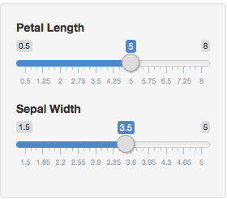

- My ShinyApp has been created to illustrate how prediction/classification works.
- I decided to work with the 'Iris' dataset, and based on 2 main attributes for prediction, allow users to test how different flower dimensions (petal length and sepal width) would result in Species prediction.
- This mechanism helps experimenting how changing the inputs the prediction/classification changes, and therefore can be useful to help students approach prediction and model construction.
Iris species prediction
Datascience Specialization - Developing data products project
Inés Vidal
Student
Ambition
The approach:
- The iris dataset contains 4 characteristics for 50 species of iris flowers. To ease graphic representation I selected two significative characteristics among the four available (Petal length and Sepal width).
- A PCA analysis of the dataset confirms that two components capture most of the variability.
- A random forest model predicts species using Petal length and Sepal width provides a 93% of accuracy.
data(iris)
inTrain <- createDataPartition(y=iris$Species, times = 1, p=0.8,list = FALSE)
irisTrain <- iris[inTrain,]
irisTest <- iris[-inTrain,]
irisFit <- randomForest(Species ~ Petal.Length + Sepal.Width, data = irisTrain)
confusionMatrix(irisTest$Species, predict(irisFit, irisTest[1:4]))$overall[1]
Input description
- The inputs expected form the user are the Petal length and Sepal width of the flower whose species we want to predict.
- These inputs have been modeled as sliders, that allow to choose values from a range that is assumed appropriate for the prediction to be effective.

Output description
- Confirmation of the input values
- Predicted species
- Plot representing the Iris dataset and the user described flower
- The output gets refreshed everytime any of the inputs change